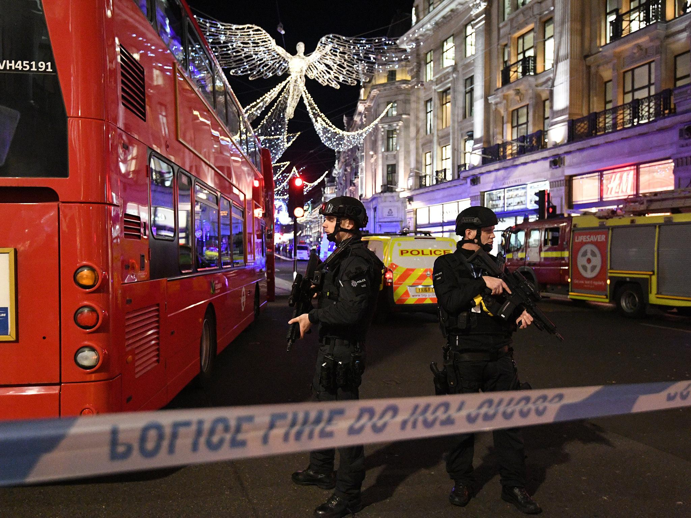

After a comparison of Barack Obama’s 2009 inauguration crowd size and
Trump’s went viral, an analysis of both crowds showed that Trump’s was about one-third the size of Obama’s.
After mass panic and widespread confusion, the British Transport Police clarified
that an evacuation of Oxford Circus took place because of
"an altercation" between two men, and not – as far-right ogres had prematurely gloated – an attack by Islamic terrorists.

1.6k 1.3k
3
Missing people in aftermarth of the Manchester Attack